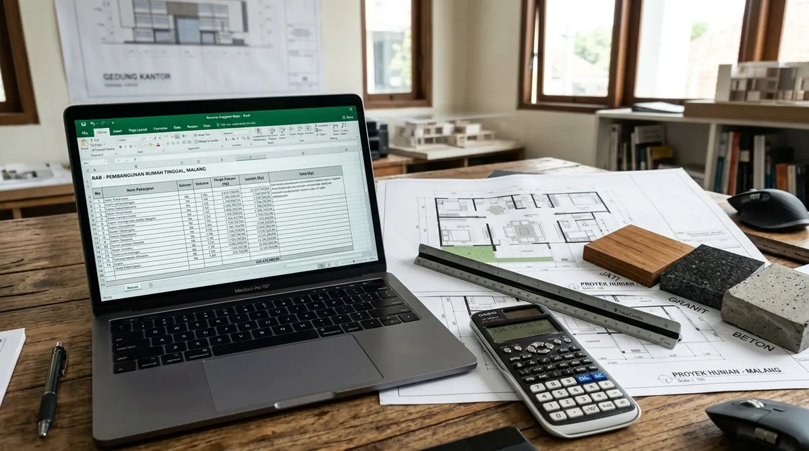

Ringkasan Inti
- Praktik profesi arsitek di Indonesia diatur dalam UU Nomor 6 Tahun 2017 tentang Arsitek dengan Surat Tanda Registrasi Arsitek (STRA) sebagai tanda registrasi resmi keprofesian.
- Pengajuan PBG pada portal SIMBG memerlukan kelengkapan dokumen rencana teknis arsitektur, perhitungan struktur, dan spesifikasi yang disusun oleh perencana bersertifikat.
- Risiko menggunakan perencana tanpa legalitas jelas mencakup penolakan dokumen oleh sistem SIMBG dan potensi denda administratif hingga 10 persen dari nilai bangunan.
- Keanggotaan IAI dan kepemilikan STRA merupakan dua entitas yang berbeda, sehingga pemilik rumah di Malang disarankan memeriksa validitas keduanya sebelum menandatangani kontrak.
Daftar Isi Artikel
Arsitek Malang bersertifikat IAI sangat penting untuk legalitas karena gambar rencana teknis dan dokumen PBG memerlukan perencana yang kompeten, teregistrasi resmi melalui STRA, dan bertanggung jawab penuh secara keprofesian.
Perbedaan Arsitek Bersertifikat IAI dengan Desainer Biasa
Di dunia konstruksi dan properti Malang Raya, masih banyak masyarakat yang menyamakan peran antara seorang desainer interior/drafter gambar dengan arsitek profesional berlisensi. Sesuai dengan Undang-Undang Nomor 6 Tahun 2017 tentang Arsitek, seseorang hanya berhak menyandang gelar dan berpraktik sebagai Arsitek apabila telah lulus program profesi arsitek (PPAr), terdaftar sebagai anggota Ikatan Arsitek Indonesia (IAI), dan memegang Surat Tanda Registrasi Arsitek (STRA) aktif yang diterbitkan oleh Dewan Arsitek Indonesia.
Desainer bangunan atau drafter tanpa lisensi umumnya hanya berfokus pada estetika visual eksterior dan denah konseptual tanpa beban tanggung jawab hukum profesi. Sebaliknya, arsitek bersertifikat IAI terikat oleh kode etik keprofesian ketat, memahami regulasi tata ruang daerah Kota Malang, Kabupaten Malang, dan Kota Batu, serta memikul tanggung jawab hukum atas keandalan dan keselamatan rancangan bangunan yang mereka buat.

Peran Krusial Arsitek Berlisensi dalam Pengesahan Dokumen PBG SIMBG
Semenjak terbitnya PP Nomor 16 Tahun 2021 tentang Peraturan Pelaksanaan UU Bangunan Gedung, seluruh permohonan izin mendirikan bangunan kini dialihkan menjadi Persetujuan Bangunan Gedung (PBG) melalui portal nasional SIMBG. Sistem ini memberlakukan verifikasi ketat berbasis algoritma dan penelaahan tim penilai teknis (TPT/TPA) dinas terkait.
Pengajuan PBG menuntut kelengkapan gambar Detail Engineering Design (DED) yang mencakup:
- Gambar Arsitektur Komprehensif: Denah, tampak empat sisi, potongan melintang dan memanjang, detail arsitektural, hingga rencana tata pencahayaan dan sirkulasi alami.
- Perhitungan Tata Ruang Daerah: Kesesuaian koefisien dasar bangunan (KDB), koefisien lantai bangunan (KLB), koefisien daerah hijau (KDH), dan kepatuhan Garis Sempadan Bangunan (GSB).
- Koordinasi Gambar Struktur & MEP: Perhitungan pembebanan pondasi bertingkat, penulangan beton tahan gempa wilayah Malang, serta instalasi mekanikal, elektrikal, dan plumbing.
- Spesifikasi Teknis (RKS): Penentuan jenis material yang memenuhi Standar Nasional Indonesia (SNI).
Dokumen yang disusun tanpa pengesahan perencana ber-STRA berisiko tinggi dikembalikan dengan catatan revisi berulang, bahkan ditolak sistem. Kegagalan memperoleh PBG ini tidak hanya menunda jadwal pembangunan, namun juga menempatkan pemilik rumah pada risiko denda administratif hingga 10 persen dari nilai bangunan (mencapai Rp100 juta untuk rumah berbiaya Rp1 miliar).
Catatan Arsitek Malang
Saat menandatangani kontrak jasa arsitek, selalu mintakan klausul tertulis bahwa perencana bersedia mendampingi proses sidang verifikasi dokumen pada portal SIMBG daerah hingga Surat Persetujuan Bangunan Gedung resmi terbit.
Panduan Cara Verifikasi STRA dan Tahapan Kerja Arsitek Profesional
Agar terhindar dari oknum perencana yang tidak bertanggung jawab, calon pemilik rumah dapat melakukan langkah-langkah verifikasi keabsahan praktisi arsitektur berikut:
- Periksa Nomor STRA: Mintakan salinan STRA arsitek yang bersangkutan. Validitas STRA dapat dicek melalui basis data registrasi Dewan Arsitek Indonesia.
- Konfirmasi Keanggotaan IAI Daerah: Hubungi sekretariat pengurus IAI Wilayah Malang untuk memastikan status keanggotaan aktif perencana Anda.
- Cek Portofolio Proyek Terbangun: Mintalah portofolio berupa foto bangunan asli yang sudah selesai dibangun di Malang Raya, bukan sekadar gambar rendering 3D komputer.
- Transparansi Kontrak Kerja: Pastikan kontrak jasa mencantumkan ruang lingkup kerja detail: jumlah revisi desain, gambar kerja teknis untuk pengajuan SIMBG, dan estimasi Rencana Anggaran Biaya (RAB).
Memilih jasa arsitek bersertifikat IAI sangat krusial terutama untuk proyek-proyek dengan risiko tinggi, seperti hunian di lahan miring berkontur terjal di Dau atau Batu yang membutuhkan retaining wall kokoh, penambahan lantai rumah lama di kawasan padat penduduk Klojen/Lowokwaru, serta pemugaran bangunan di kawasan cagar budaya heritage Ijen Malang.
FAQ (Pertanyaan Sering Diajukan)
Apakah wajib memakai arsitek bersertifikat untuk membangun rumah?
Ketentuan wajib tidaknya bergantung pada fungsi, kompleksitas, dan kebijakan pemerintah daerah. Namun secara umum pengurusan PBG pada sistem SIMBG menuntut dokumen teknis yang disusun oleh perencana berkompeten pemegang STRA aktif agar berkas tidak ditolak verifikator dinas.
Apakah keanggotaan IAI sama dengan STRA?
Tidak sama. IAI (Ikatan Arsitek Indonesia) adalah asosiasi profesi resmi arsitek, sedangkan STRA (Surat Tanda Registrasi Arsitek) adalah tanda registrasi lisensi keprofesian resmi dari Dewan Arsitek Indonesia berdasarkan UU No. 6 Tahun 2017.
Apakah arsitek bersertifikat IAI menjamin PBG pasti terbit?
Persetujuan akhir PBG merupakan wewenang mutlak dinas teknis pemerintah daerah. Namun arsitek bersertifikat memastikan dokumen teknis telah memenuhi seluruh parameter regulasi sehingga proses verifikasi berlangsung mulus tanpa risiko penolakan fatal.
Apakah arsitek bersertifikat IAI juga mengurus PBG?
Banyak biro konsultan arsitek profesional menyertakan layanan pendampingan unggah berkas SIMBG, koordinasi sidang penilai teknis, hingga penerbitan SKRD dalam paket kontrak kerja DED mereka.
Rencanakan Bangunan Anda Bersama Arsitek Berlisensi IAI
Dapatkan desain arsitektur tropis bernilai estetika tinggi, perhitungan struktur presisi, dan pendampingan PBG SIMBG resmi di Malang Raya.

Naura Regyna Putri
Penulis & Tim Riset Arsitektur Maroon Arsitek Malang, spesialis regulasi keprofesian arsitek, pengurusan PBG/SIMBG, dan kepatuhan standar teknis konstruksi di Jawa Timur.